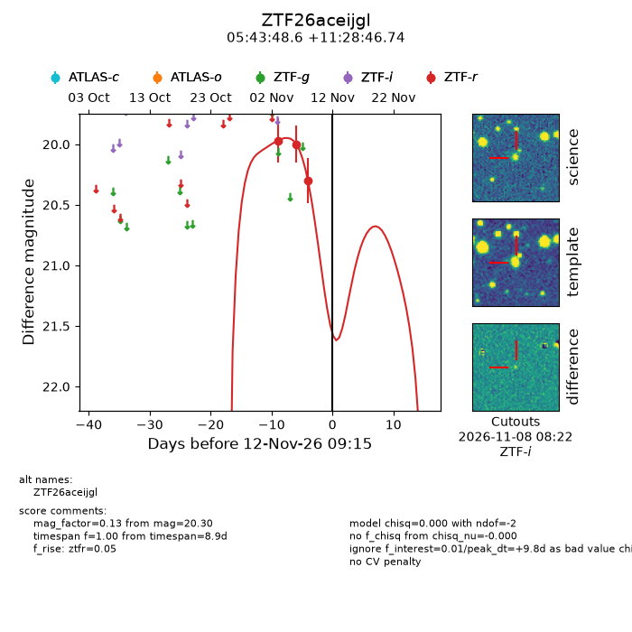
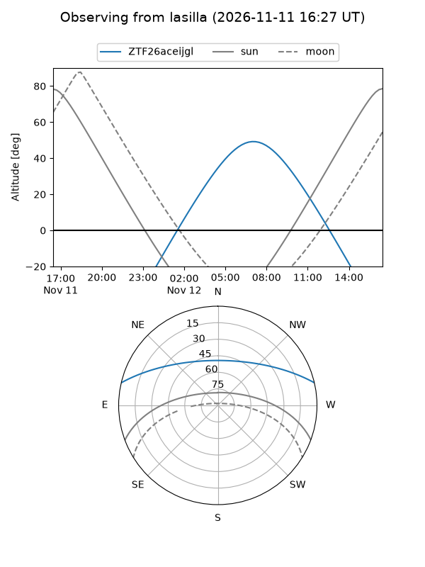
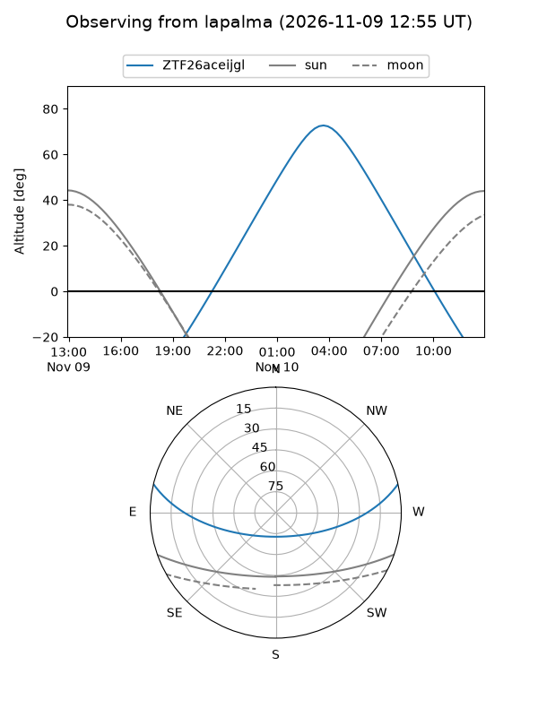
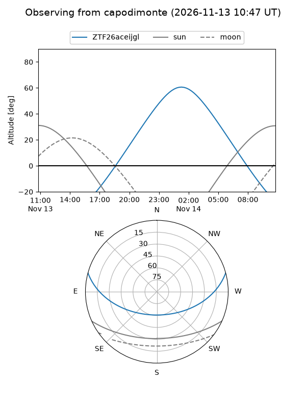
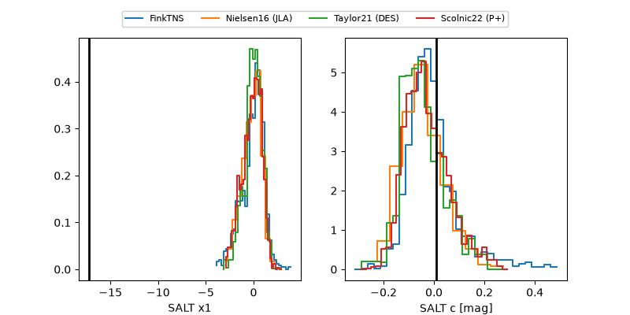

ZTF26aceijgl
Target ZTF26aceijgl at 2026-11-12 09:20
Aliases and brokers:
FINK-ZTF: ztf.fink-portal.org/ZTF26aceijgl
Lasair-ZTF: lasair-ztf.lsst.ac.uk/objects/ZTF26aceijgl
ALeRCE-ZTF: alerce.online/object/ZTF26aceijgl
Direct TNS query: direct search
alt names
ZTF26aceijgl (ztf,fink_ztf)
Coordinates:
equatorial (ra, dec) = 85.9524,+11.47965
equatorial (HMS+DMS) = 05:43:48.58,+11:28:46.74
galactic (l, b) = (194.7980,-9.37521)
Flags:
peak dt: +9.8
Photometry:
last ztfr=20.30
3 ztfr detections
Lightcurve

Visibility



Additional plots
